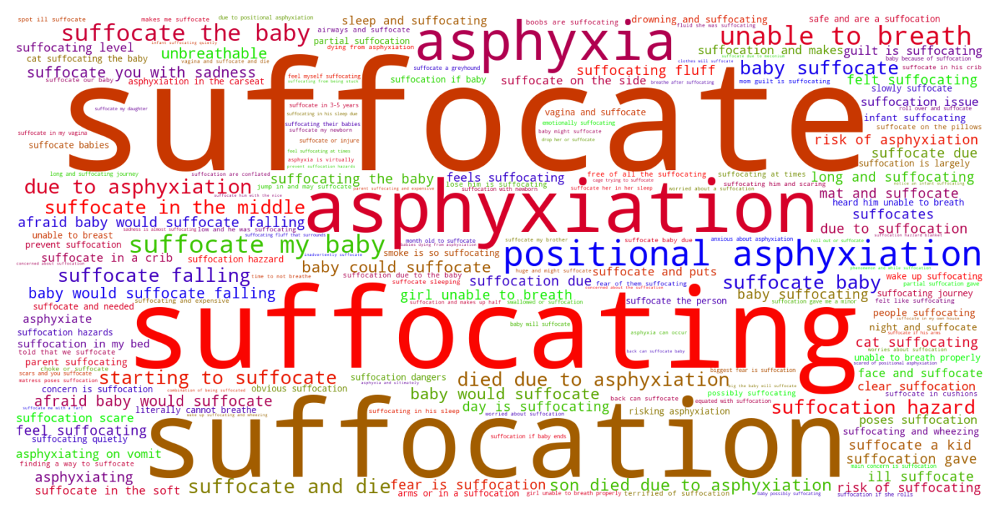
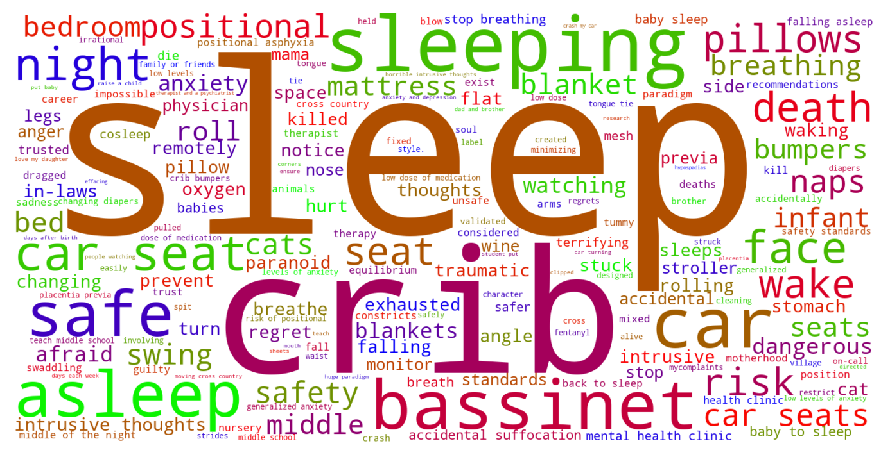

Jump to section:
Samples from Social CorpusHits per UMLS Alias on Social Corpus
Word Cloud Comparison
Embedding Space Comparison
Nearest Neighbors by Semantic Type
Related Analysed Concepts
Samples from Social Corpus
I'm guessing the main reason is that there is definitely a risk of suffocation if she rolls over and puts her face down , but if I'm just watching TV or reading and she's next to me and I'm paying attention to her is there a risk ?
Confidence: 1.000. Reddit link
He comes over either way the fuck too much ( basically moved in , suffocating level ) , or not at all ( he takes parenting time when I tell him to back the fuck off ) .
Confidence: 0.804. Reddit link
Sleeping is already uncomfortable at 7 months pregnant , but now with being unable to breath through my nose ...
Confidence: 1.000. Reddit link
But I often check on her because I'm paranoid and scared of positional asphyxiation .
Confidence: 0.655. Reddit link
Baby suffocation scare - why empty crib is important ( 3 month old ) My baby sleeps in her crib , no pillow or anything , in a zip up swaddle .
Confidence: 0.804. Reddit link
I've avoided visiting him in his home pretty much the entire time my husband and I have been together , because walking through the door is like hitting a wall of absolutely unbreathable air .
Confidence: 0.555. Reddit link
I'm suffocating .
Confidence: 1.000. Reddit link
Last night my son was sleeping with my wife on the bed and I suddenly heard him unable to breath through his nose and it did sound like he had alot of mucus anyway he woke up screaming super bad and crying hysterically .
Confidence: 0.752. Reddit link
We chatted about it and I said I've read a lot about swaddling with a blanket poses a risk of suffocation due to the baby potentially kicking it off !
Confidence: 0.742. Reddit link
We are worried that once the baby is here , the cat will still want to jump in and may suffocate the baby or try to scratch the baby .
Confidence: 0.707. Reddit link
Hits per UMLS Alias on Social Corpus
-
suffocate
217 hits
-
suffocating
113 hits
-
suffocation
101 hits
-
asphyxiation
44 hits
-
asphyxia
15 hits
-
asphyxias
1 hits
-
suffocating finding
1 hits
-
suffocation nos
0 hits
-
suffocations
0 hits
-
asphyxiation event
0 hits
-
asphyxiation nos
0 hits
Word Cloud Comparison
Keywords matching C0004044
Keywords matched against concept. Word size represents frequency.
Keywords co-occurring with C0004044
Co-occurrence is measured at the document-level (i.e. Reddit submissions). Frequencies are normalized to account for keywords common to all CUIs.
Embedding Space Comparison
T-SNE comparison for word embeddings learned from medical domain (EuroPMC) and social media (Reddit) independently.
Pearson correlation for union of closest 1000 neighbors: -0.115
Nearest Neighbors by Semantic Type
Most similar concepts in each of the selected UMLS semantic types. Based on concept embeddings from social corpus.
T046 (Pathologic Function)
-
C0004044
Suffocate
1.000 Similarity
-
C0242184
Decreased oxygen supply
0.545 Similarity
-
C0008301
Choking
0.541 Similarity
-
C0015927
Iud
0.521 Similarity
-
C0011071
Death sudden
0.510 Similarity
-
C0006110
Brain dead
0.506 Similarity
-
C0750966
Coma irreversible
0.504 Similarity
-
C0021308
Infarct
0.480 Similarity
T184 (Sign or Symptom)
-
C0231811
Suffocated
0.813 Similarity
-
C0546947
Choking sensation
0.684 Similarity
-
C0522179
Death anxiety
0.577 Similarity
-
C0036572
Fit
0.512 Similarity
-
C0003578
Apnea
0.486 Similarity
-
C0235160
Tossing turning during sleep
0.482 Similarity
-
C0037317
Trouble sleeping
0.477 Similarity
-
C0235162
Poor sleep
0.475 Similarity
T037 (Injury or Poisoning)
-
C1536743
Accidental suffocation nos
0.769 Similarity
-
C2362502
Safety issues
0.542 Similarity
-
C0277619
Smothering
0.542 Similarity
-
C0417813
Choking food
0.518 Similarity
-
C0000921
Falling
0.509 Similarity
-
C0018674
Head injury
0.503 Similarity
-
C0337228
Fall bed
0.497 Similarity
-
C0332666
Injuries old
0.496 Similarity
T047 (Disease or Syndrome)
-
C0038644
Sids
0.732 Similarity
-
C0037315
Sleep apnea
0.551 Similarity
-
C0159020
Fits newborn
0.551 Similarity
-
C1135365
Apnea newborn sleep
0.551 Similarity
-
C0917799
Much sleeping too
0.519 Similarity
-
C0456511
Sleep paralysis
0.512 Similarity
-
C0270971
Floppy baby
0.492 Similarity
-
C0238276
Smothered
0.488 Similarity
T074 (Medical Device)
-
C0179275
Infant bed
0.564 Similarity
-
C0972397
Air mattress
0.555 Similarity
-
C3873659
Sleep apnea mask
0.534 Similarity
-
C0181770
Bed mattress
0.530 Similarity
-
C0183257
Hip protectors
0.528 Similarity
-
C3878897
Reclining chair
0.510 Similarity
-
C0181776
Water mattress
0.502 Similarity
-
C0178987
Airway
0.501 Similarity
T079 (Temporal Concept)
-
C1301931
Death time
0.561 Similarity
-
C4744815
Death year
0.507 Similarity
-
C0439600
Remitting
0.418 Similarity
-
C0231330
Infancy
0.418 Similarity
-
C0541528
Newborn states
0.380 Similarity
-
C2911686
First feeding
0.379 Similarity
-
C0587116
During sleep
0.377 Similarity
-
C0449246
Time since injury
0.375 Similarity
T048 (Mental or Behavioral Dysfunction)
-
C0679256
Hazardous use
0.544 Similarity
-
C0563172
Dangerous plans
0.529 Similarity
-
C0855247
Attack sleep
0.482 Similarity
-
C0393760
Trouble falling asleep
0.475 Similarity
-
C0003635
Apraxia
0.464 Similarity
-
C0270327
Bed wetting
0.453 Similarity
-
C0349245
Hysterical fit
0.446 Similarity
-
C1456784
Paranoia
0.445 Similarity
T100 (Age Group)
-
C4551581
Full term baby
0.527 Similarity
-
C0021270
Baby
0.524 Similarity
-
C0021289
Newborn
0.517 Similarity
-
C3494262
Extremely preterm infant
0.491 Similarity
-
C4048294
Preterm baby
0.465 Similarity
-
C1708505
Infant toddler
0.460 Similarity
-
C0728836
Young child
0.329 Similarity
-
C0008059
Child
0.322 Similarity
T023 (Body Part, Organ, or Organ Component)
-
C0007776
Grey matter
0.524 Similarity
-
C0015385
Limb
0.500 Similarity
-
C0023216
Leg
0.454 Similarity
-
C0023078
Larynx
0.450 Similarity
-
C0040578
Trachea
0.443 Similarity
-
C0230415
Right leg
0.433 Similarity
-
C0042460
Vena cava
0.432 Similarity
-
C0921178
Right frontalis
0.430 Similarity
T039 (Physiologic Function)
-
C0858972
Baby sleep
0.493 Similarity
-
C0232008
Airflow reverse
0.488 Similarity
-
C2584297
Seated position
0.484 Similarity
-
C0035203
Ventilation
0.476 Similarity
-
C0234451
S sleep
0.471 Similarity
-
C0231999
Airflow
0.455 Similarity
-
C2350291
Gating startle
0.436 Similarity
-
C0040480
Twist
0.403 Similarity
T201 (Clinical Attribute)
-
C0012655
Predisposition
0.490 Similarity
-
C0429622
Oxygen supply
0.482 Similarity
-
C0814118
Fetal vulnerability
0.460 Similarity
-
C0231832
Breathing rate
0.429 Similarity
-
C0035234
Breathing sound
0.404 Similarity
-
C1286272
Form bone
0.373 Similarity
-
C1286083
Form breast
0.364 Similarity
-
C1286038
Position pregnancy
0.359 Similarity
T061 (Therapeutic or Preventive Procedure)
-
C2315054
Putting baby breast
0.487 Similarity
-
C0150223
Fall prevention
0.471 Similarity
-
C2317425
Bathing infant
0.462 Similarity
-
C0185023
Attachment
0.458 Similarity
-
C0150755
Safety precautions
0.450 Similarity
-
C0557958
Locking
0.444 Similarity
-
C0557982
Constant watching
0.443 Similarity
-
C0349707
Aspiration
0.438 Similarity
T060 (Diagnostic Procedure)
-
C0162701
Sleep study
0.485 Similarity
-
C0430792
Sleep eeg sleep deprived patient
0.423 Similarity
-
C0430748
Slump test
0.409 Similarity
-
C1704567
Still point
0.408 Similarity
-
C1293842
Hip maneuver
0.405 Similarity
-
C0860888
Ct spirals
0.392 Similarity
-
C0430746
Spine testing
0.391 Similarity
-
C1293900
Grip hand
0.377 Similarity
T041 (Mental Process)
-
C0003808
Arousal
0.468 Similarity
-
C0015726
Scared
0.462 Similarity
-
C0043012
Vigilant
0.455 Similarity
-
C0037322
Dream sleep
0.454 Similarity
-
C0004056
Aspirations
0.440 Similarity
-
C3146231
Secure feeling
0.422 Similarity
-
C0009647
Conditioned
0.393 Similarity
-
C0870509
Escape
0.386 Similarity
T019 (Congenital Abnormality)
-
C0265783
Underdeveloped lung
0.467 Similarity
-
C0266449
Brain malformation
0.463 Similarity
-
C0000768
Birth defect
0.457 Similarity
-
C0265529
Plagiocephaly
0.456 Similarity
-
C0019555
Dislocated hip since birth
0.439 Similarity
-
C0432185
Absent muscles since birth
0.434 Similarity
-
C0013336
Runting
0.428 Similarity
-
C0240912
Rocker bottom foot
0.415 Similarity
T200 (Clinical Drug)
-
C0599396
Sleeping pills
0.465 Similarity
-
C0718788
Baby oil top
0.387 Similarity
-
C0678431
Cough syrup
0.316 Similarity
-
C3218395
Papain pill
0.305 Similarity
-
C0978093
Lanolin cream
0.240 Similarity
-
C1247002
Misoprostol oral tablet
0.223 Similarity
-
C4048176
Oxytocin injection
0.209 Similarity
-
C1242003
Mol iron tablets
0.207 Similarity
T042 (Organ or Tissue Function)
-
C0231940
Oxygenation
0.461 Similarity
-
C0043229
Breathing work
0.391 Similarity
-
C0042396
Vasospasm
0.384 Similarity
-
C1160388
Respiratory tube development
0.378 Similarity
-
C0013010
Brain laterality
0.359 Similarity
-
C0678857
Fine motor skill
0.343 Similarity
-
C0005778
Clotting
0.341 Similarity
-
C0032058
Placentation
0.341 Similarity
T190 (Anatomical Abnormality)
-
C0016202
Fallen arch
0.457 Similarity
-
C0332482
Distortion
0.422 Similarity
-
C0022821
Round back
0.407 Similarity
-
C0266785
Umbilical cord issue
0.393 Similarity
-
C4025319
Head stopped growing
0.382 Similarity
-
C0576093
Knee knocked
0.381 Similarity
-
C0266788
Marginal cord insertion
0.372 Similarity
-
C4476527
Flat head
0.368 Similarity
T067 (Phenomenon or Process)
-
C0000924
Accident
0.453 Similarity
-
C0000929
Accident home
0.432 Similarity
-
C0337226
Fall home
0.413 Similarity
-
C2986841
Binding potential
0.410 Similarity
-
C0375737
Fall from toilet
0.408 Similarity
-
C0042491
Air ventilation
0.402 Similarity
-
C1553901
Mitigate
0.398 Similarity
-
C0868945
Deterioration
0.395 Similarity
T031 (Body Substance)
-
C0370199
Aspirate
0.452 Similarity
-
C0007806
Spinal fluid
0.402 Similarity
-
C0225379
Upper respiratory fluid
0.391 Similarity
-
C0015733
Crap
0.356 Similarity
-
C0162371
Cord blood
0.355 Similarity
-
C1253943
Fluid chest
0.351 Similarity
-
C0038352
Stomach contents
0.345 Similarity
-
C1370194
Spun csf
0.340 Similarity
T044 (Molecular Function)
-
C0887940
Gene arrangements
0.445 Similarity
-
C0369768
Oxygen saturation
0.435 Similarity
-
C1752422
Wing hair outgrowth
0.409 Similarity
-
C0301647
Strand breaks
0.385 Similarity
-
C1149397
Heartless ligand
0.383 Similarity
-
C1150342
Dopachrome rearranging enzyme
0.352 Similarity
-
C1721104
Breaks dna
0.321 Similarity
-
C1749457
Ligands activity
0.309 Similarity
T054 (Social Behavior)
-
C0282657
Infibulations
0.440 Similarity
-
C0162388
Killing
0.428 Similarity
-
C0597728
Protected sex
0.416 Similarity
-
C0870084
Abandonment
0.411 Similarity
-
C0027536
Necking
0.399 Similarity
-
C1261512
Attack
0.392 Similarity
-
C0006875
Cannibalism
0.380 Similarity
-
C0680215
Interdependency
0.377 Similarity
T101 (Patient or Disabled Group)
-
C0683995
Drug exposed child
0.432 Similarity
-
C0002695
Amputee
0.420 Similarity
-
C0233363
Monoamniotic twins
0.365 Similarity
-
C1456639
Living with cancer
0.359 Similarity
-
C2963182
Aids living with aids
0.358 Similarity
-
C4727511
Women who have mastectomy
0.353 Similarity
-
C0175950
Problem children
0.343 Similarity
-
C0008098
Child hospitalized
0.336 Similarity
T059 (Laboratory Procedure)
-
C3541925
Head us
0.426 Similarity
-
C0026040
Sectionings thin
0.393 Similarity
-
C3830389
Drying other
0.376 Similarity
-
C4744894
Wake after sleep onset
0.359 Similarity
-
C0162676
Emit
0.355 Similarity
-
C4722414
Total sleep time
0.352 Similarity
-
C1294348
Mold test
0.352 Similarity
-
C3829002
Mixing other
0.342 Similarity
T195 (Antibiotic)
-
C0701901
Baypen
0.425 Similarity
-
C0013090
Doxycycline
0.326 Similarity
-
C0723285
Septa
0.287 Similarity
-
C0878118
Geopen
0.283 Similarity
-
C0279516
Antibacterial
0.266 Similarity
-
C1564058
Roxi basics
0.258 Similarity
-
C0003232
Antibiotics
0.234 Similarity
-
C2830187
Prospec
0.214 Similarity
T005 (Virus)
-
C5116712
Bjornvirus
0.409 Similarity
-
C3768023
Mycobacteriophage conspiracy
0.397 Similarity
-
C1024667
Gadgets gully virus
0.374 Similarity
-
C0599652
Leaky virus
0.362 Similarity
-
C3949524
Mischivirus
0.359 Similarity
-
C0597404
Respiratory virus
0.357 Similarity
-
C0205939
Cold virus common
0.354 Similarity
-
C4433204
King virus
0.346 Similarity
T032 (Organism Attribute)
-
C0220898
Susceptible
0.409 Similarity
-
C0005902
Body surface area
0.408 Similarity
-
C0751992
Fetal weight
0.406 Similarity
-
C0805393
Breathing spontaneous
0.401 Similarity
-
C0575118
Normal posture
0.387 Similarity
-
C0005612
Weight baby
0.383 Similarity
-
C0040774
Cross dresser
0.357 Similarity
-
C1443333
Squatting body position
0.353 Similarity
T018 (Embryonic Structure)
-
C0440731
Fetal brain
0.399 Similarity
-
C0553522
Cord placenta umbilical
0.394 Similarity
-
C0041637
Umbilical vein
0.375 Similarity
-
C0041632
Umbilical artery
0.375 Similarity
-
C0041633
Umbilical cord
0.364 Similarity
-
C0015965
Fetal
0.348 Similarity
-
C0231024
Neural tube
0.346 Similarity
-
C0032043
Placenta
0.323 Similarity
T007 (Bacterium)
-
C0023859
Listeria
0.357 Similarity
-
C1015849
Wigglesworthia
0.349 Similarity
-
C0036111
Salmonella
0.330 Similarity
-
C0995648
Genus quinella
0.316 Similarity
-
C0018154
Gram positive bacteria
0.291 Similarity
-
C0022828
L forms
0.284 Similarity
-
C0597134
Flora oral
0.283 Similarity
-
C4169658
Convivina
0.283 Similarity
T049 (Cell or Molecular Dysfunction)
-
C4725191
Stop lost
0.353 Similarity
-
C0021943
Inversion
0.347 Similarity
-
C0544885
Stop gain
0.315 Similarity
-
C1705285
Mutated
0.290 Similarity
-
C0008625
Chromosomal abnormality
0.260 Similarity
-
C0041107
Trisomy
0.259 Similarity
-
C0040715
Translocation
0.249 Similarity
-
C0599156
Transition
0.231 Similarity
T034 (Laboratory or Test Result)
-
C0428758
Uncomfortable loudness level
0.322 Similarity
-
C0282578
Dna footprints
0.308 Similarity
-
C0428255
Lead levels
0.303 Similarity
-
C2266672
Clotting time finding
0.299 Similarity
-
C0580946
Sitting blood pressure
0.284 Similarity
-
C0428962
Poor ecg quality
0.278 Similarity
-
C0580944
Lying blood pressure
0.274 Similarity
-
C0205558
False negatives
0.267 Similarity